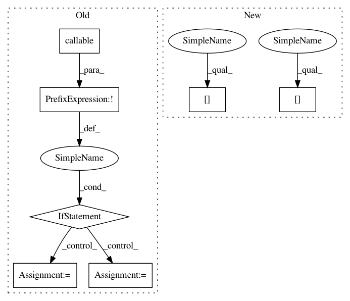

3052e961e54ead28c717b6bbf5c785946e727fa9,finetune/input_pipeline.py,BasePipeline,get_target_input_fn,#BasePipeline#Any#Any#,316
Before Change
def get_target_input_fn(self,Xs,batch_size=None):
if not callable(Xs):
Xs_fn = lambda: self.wrap_tqdm(Xs, False)
else:
Xs_fn = lambda: self.wrap_tqdm(Xs(), False)
dataset_encoded = lambda: itertools.chain.from_iterable(map(self._encode_separate_inference, Xs_fn()))
batch_size = batch_size or self.config.batch_size
After Change
batch_size = min(len(features),64)
features = pd.DataFrame(features).to_dict("list")
for key in features:
features[key] = np.array(features[key])
tf_dataset = lambda: tf.data.Dataset.from_tensor_slices(dict(features)).batch(batch_size)
return tf_dataset
In pattern: SUPERPATTERN
Frequency: 3
Non-data size: 7
Instances
Project Name: IndicoDataSolutions/finetune
Commit Name: 3052e961e54ead28c717b6bbf5c785946e727fa9
Time: 2019-06-20
Author: matthew.bayer@indico.io
File Name: finetune/input_pipeline.py
Class Name: BasePipeline
Method Name: get_target_input_fn
Project Name: analysiscenter/batchflow
Commit Name: 8fa906d9b705d48766076ec8a60e89fd290d095c
Time: 2019-03-15
Author: Tsimfer.SA@gazprom-neft.ru
File Name: batchflow/models/tf/deep_galerkin.py
Class Name: DeepGalerkin
Method Name: _make_inputs
Project Name: IndicoDataSolutions/finetune
Commit Name: bb8cf918f0a6b0f63db15c2fd34f5d314ff51b02
Time: 2019-06-20
Author: matthew.bayer@indico.io
File Name: finetune/input_pipeline.py
Class Name: BasePipeline
Method Name: get_target_input_fn
Project Name: IndicoDataSolutions/finetune
Commit Name: 3052e961e54ead28c717b6bbf5c785946e727fa9
Time: 2019-06-20
Author: matthew.bayer@indico.io
File Name: finetune/input_pipeline.py
Class Name: BasePipeline
Method Name: get_target_input_fn